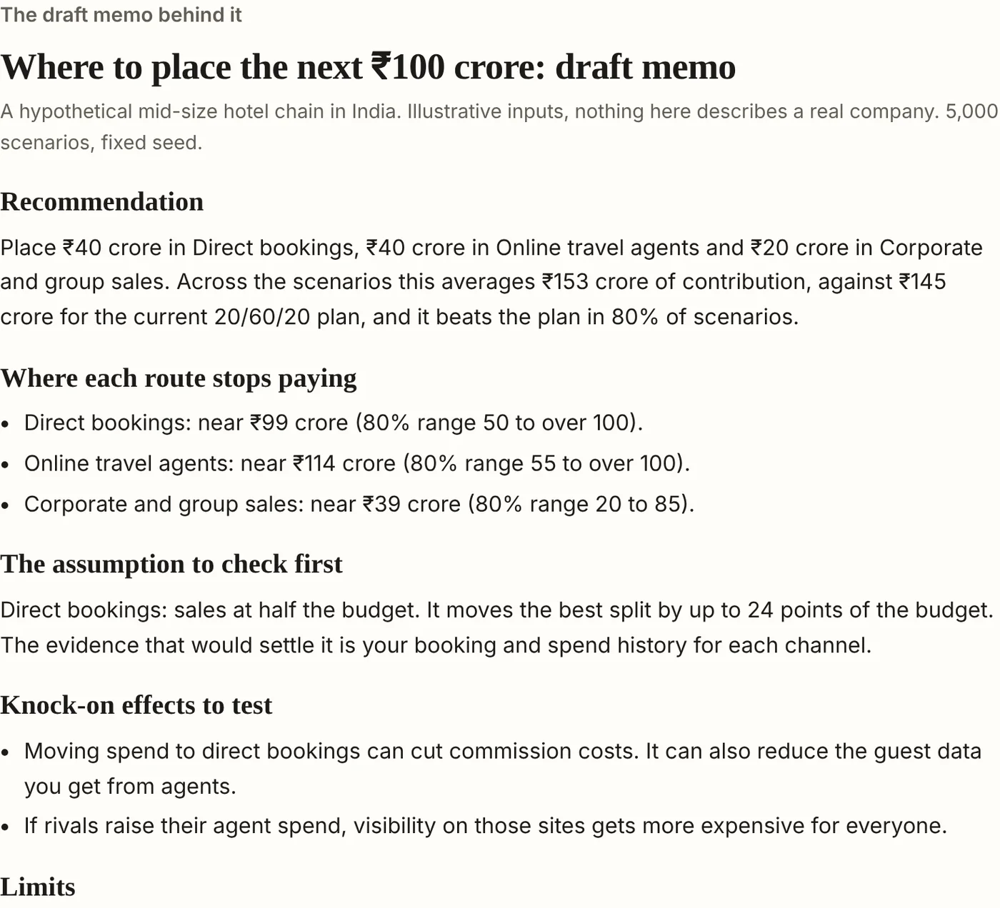

Get the first pass of analyst work done for you. Keep the judgement in-house.
I track market and competitor moves, organise the evidence, test your assumptions and turn the findings into a decision-ready memo. Start with one business question, and add more as your needs grow.
Built by Mandhir Dua, competitive strategy and decision intelligence.

Pick an industry and a decision, then watch the analyst work.
This runs in your browser on illustrative data. It shows the steps an analyst would take and what the memo looks like.
The marks show where an input comes from: a public source, your own data, or an assumption. In this demo every input is illustrative, and nothing is fetched or sent anywhere.
An analyst does more than these four jobs.
A week of analyst work is mostly the same few jobs: tracking competitors and the market, reading filings and press, checking what companies said against what they delivered, testing prices and budgets, ranking options and building scenarios. Much of that is repeatable, so a workflow can do the first pass and a person can review it.
Four worked examples go further into how this looks in practice.
How I think about a decision
I am Mandhir Dua, an independent competitive strategy advisor with a background in travel marketplaces. I help teams out of analysis paralysis. The evidence usually exists, but it sits in separate places, and the patterns that matter are hidden between them.
My work is to pull those signals together, check that the sources are credible, and trace what a move leads to at the second and third order. I look at a decision through its trade-offs, its volatility and the options it keeps open: what we would lose, what would break it, which assumptions it rests on, and how to defend it. A fixed checklist gives a generic result, so I build workflows that connect signals across sources and test many possible futures, and I design them to take in a reviewer’s corrections.
What I would not automate is the judgement about people: how strong or fragile a relationship is, what it costs to damage, and what only comes from being in the room.
Try it on one of your own decisions
Tell me about a decision your team keeps coming back to. I will look at it with you for free, and send you a one-page memo on what could be set up, what evidence it would need and what it would take.